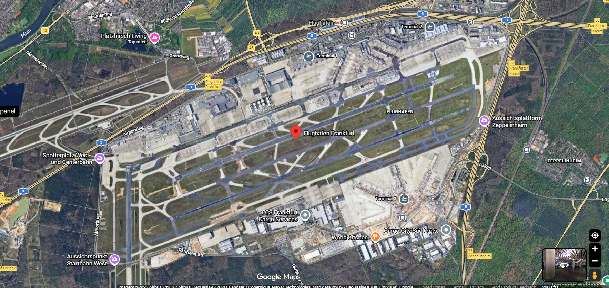

CHOOSE YOUR ALERT PRIORITY
—
Both modes always flag a forecast wind-limit exceedance. Lower thresholds add false alarms. These are sensitivity settings, not calibrated operational risk levels.
Wind-based runway availability and operating-direction forecasts.
Both modes always flag a forecast wind-limit exceedance. Lower thresholds add false alarms. These are sensitivity settings, not calibrated operational risk levels.
Emergency, medical and other legally exempt flights may operate at night. Individual flight eligibility and permission are unverified. Rules always use Europe/Berlin, even when the chart displays UTC.
Fraport hours ↗ · Hessen delay rules ↗Surface wind at one forecast location, shown across the airfield. Building heights and tree symbols are illustrative. No terrain turbulence or actual airport status is modeled.

Northwest: landings only. 18: departures south only. Centre/south: takeoffs and landings; the challenge mainly assigns centre departures and south arrivals. *T2 closed on the current official map, checked 30 Oct 2026. Terminal status is not a historical forecast. The 3D view uses illustrative building heights; footprints remain mapped. Your supplied satellite picture guides the presentation; the forecast map uses geographic runway, taxiway, apron, building and road data. Imagery is a static reference, with original attribution retained. Runway widths enlarged for readability.
Wind components are evaluated separately for RWY 18 and the parallel runways.
| Valid time | Wind / gust | 18 wind usability | Wind-based OD | Selected alert mode |
|---|
Test the challenge limits against a steady wind. This is a rule calculation.
18: tailwind ≥15 kt closes. Any runway: crosswind >40 kt including gusts closes. OD: immediate switch at ≥10 kt tailwind; otherwise after >30 min.
Decision support prototype. Probabilities describe weather-derived targets. They do not confirm the runway’s operational status, clearances, or restrictions. No official airport operations feed is connected.
Public data and the forecast interface are in place. Actual airport labels and jury dates are still missing. These checks do not turn weather proxies into operating records.
| Lead | Same test hours | ML direction accuracy | Rules accuracy | Accuracy gain | Probability error |
|---|
Direction probability error (Brier) improves at every tested lead; classification improves only at 1h and 6h. At 50%, closure detection remains 0/5 positive hours. No model retraining or new performance gain is claimed for this revision.
Forecast-time limit: archived forecast offsets predate origin by at least 18h. Exact model-run delivery and METAR arrival timestamps are unavailable. Historical replay is not proof of an as-issued forecast; future jury scoring must preserve those timestamps.
The model learns from historical weather. Its runway targets are derived from the challenge rules because verified airport operating labels are not available.
The same frozen model, with fixed 1% and 10% alert thresholds. Either mode also alerts when forecast wind exceeds a challenge limit. No threshold search or model retraining was performed for this comparison.
| Lead | Test hours / positives | Catch: detected | Catch: false alarms | Reduce: detected | Reduce: false alarms | Validation catch · reduce |
|---|
Historical EDDF wind observations and archived numerical forecasts.
Horizon-specific probability models fitted on historical data.
Chronological evaluation with a gap between training and test data.
Probabilities, wind components, and a deterministic rule baseline in one view.
Times are shown in the selected time zone. Wind directions are where the wind comes from; runway headings follow the challenge’s true-degree convention. Every saved forecast includes its source and retrieval time.
Use the overview to demonstrate both alert priorities, then select a 23:00 or 05:00 hour to show the independent scheduling layer. Use “Export forecast” for all 48 hours, both alert modes, Frankfurt flight windows and unchanged weather probabilities. The one-page PDF model card explains the measured trade-off. Forecast exports include direction scores and the next predicted change hour. Jury dates have not yet been supplied; no jury submission is claimed. For historical test days, the reproducible Python pipeline accepts an explicit issue date and retains the source provenance. Ground-truth operation files can be added once available; their scores must be reported separately from weather proxies.
Rule difference: this dashboard implements the FraAlliance challenge’s 10 kt landing tailwind limit. Fraport’s public description uses a 5 kt limit. The challenge configuration is not an operational standard.